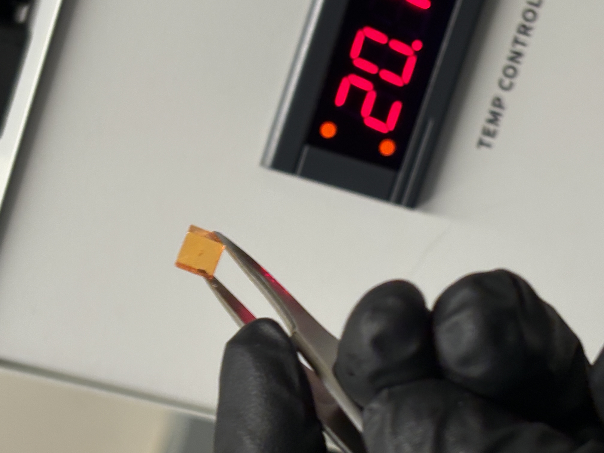
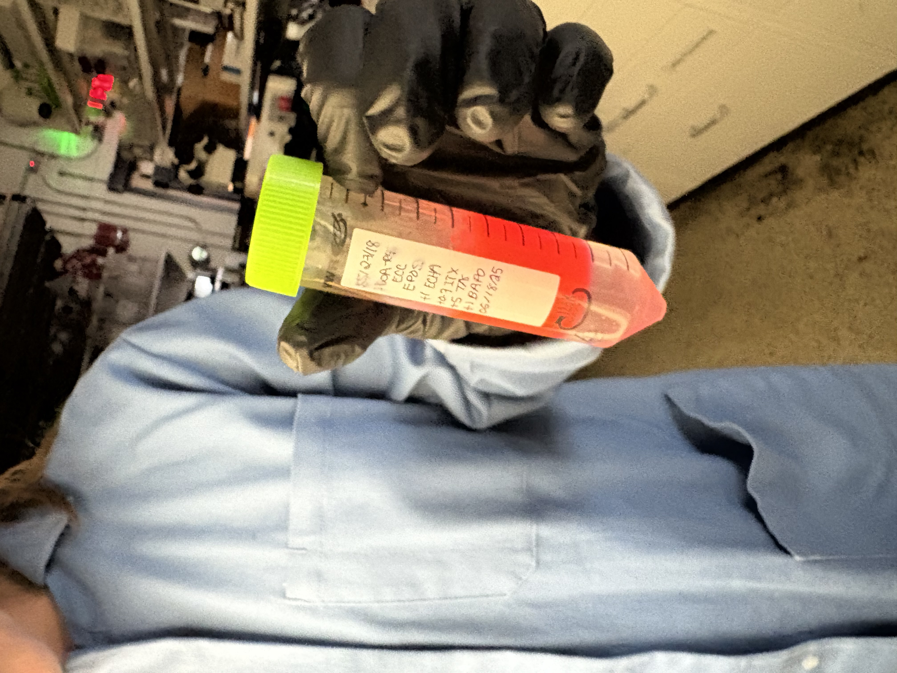
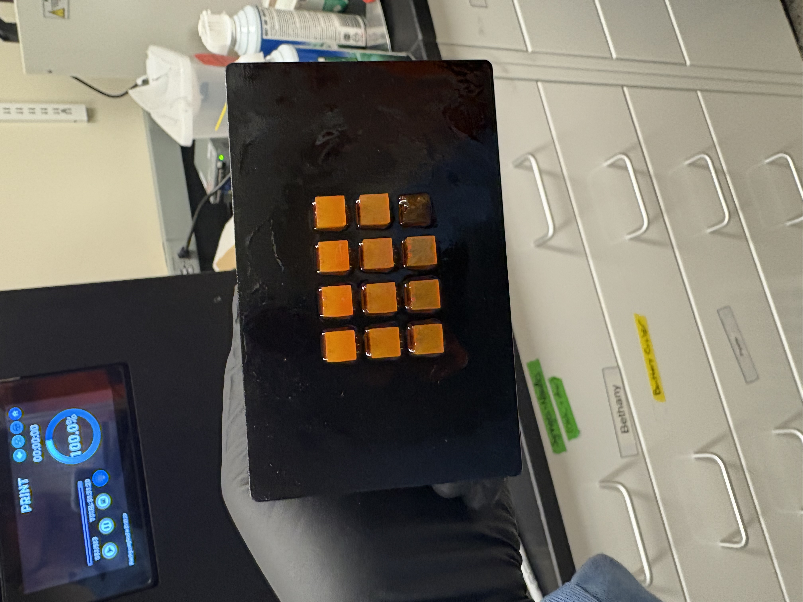
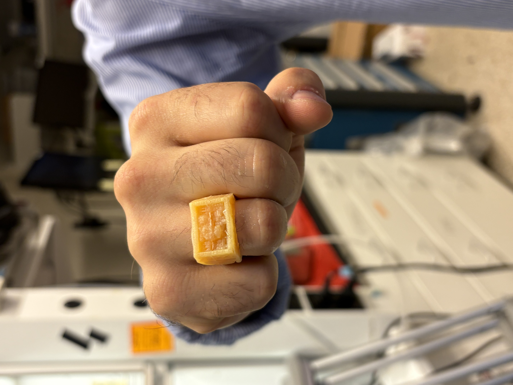
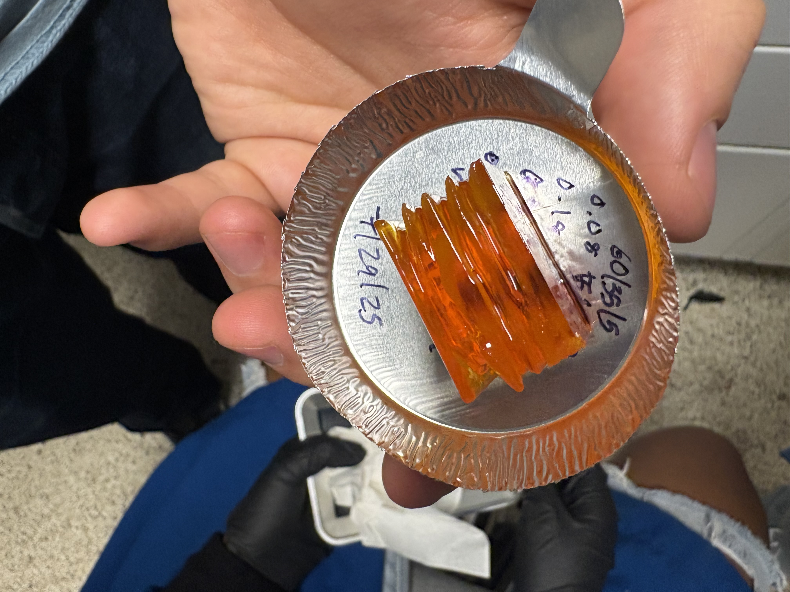

DLP 3D Printing Resin Development
During the summer of 2025, I worked in the Mechanosynthesis Group to develop a novel resin for DLP 3D printing. The purpose of the resin was to print parts with soluble supports without changing materials during the printing process. In order to achieve this, the resin contains both acrylate and epoxide monomers. This allows it to polymerize either an acrylate network (linear), or an epoxide network (crosslinked) depending on the intensity of light it is exposed to. A lot of my time this summer was spent starting prints of test cubes with different exposures, checking if they dissolved, and then varying the concentration of various chemicals in the resin to improve the results. Though I cannot share more details on the resin composition, below are some pictures from the process:



